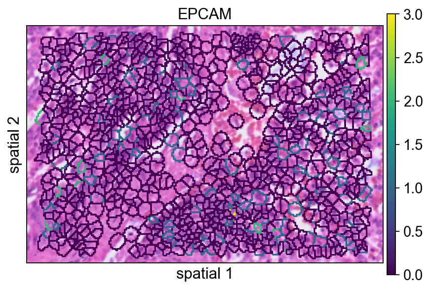
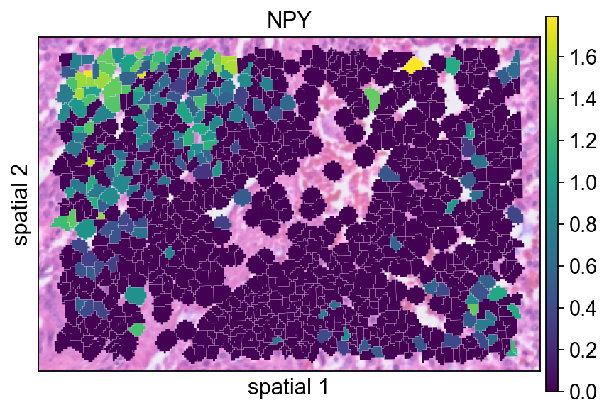
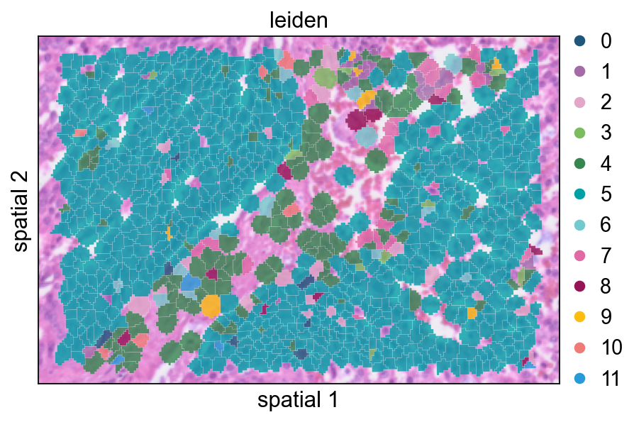
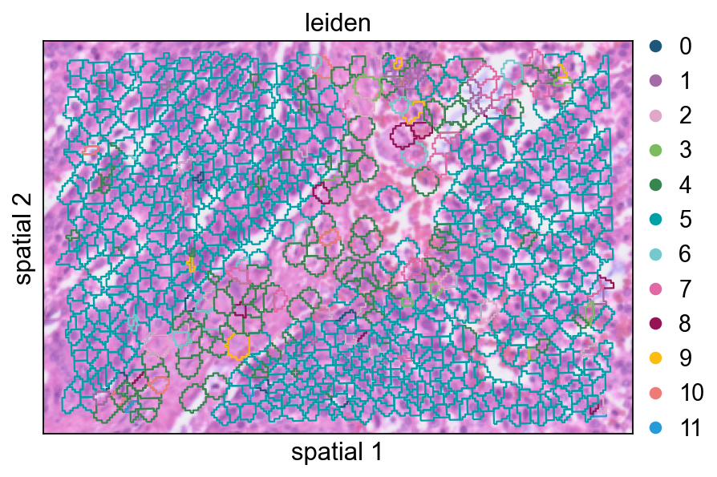

Analyze Visium HD data#
Visium HD is 10x Genomics’ high-resolution spatial transcriptomics workflow for measuring gene expression directly on tissue sections. Compared with earlier lower-resolution spot-based layouts, the practical shift in Visium HD is that analysis often begins from much denser spatial units and then moves between multiple views of the same specimen, such as regular bins and segmentation-derived cells. That makes it especially important to understand not just the expression matrix, but also how coordinates, histology images, and segmentation outputs relate to one another.
This notebook walks through a typical Visium HD workflow in OmicVerse using both the bin-level output and the cell segmentation output from a 10x Genomics run. The example covers four tasks:
reading Visium HD data into
AnnData,visualizing gene expression on the tissue image,
identifying spatially variable genes in a local region and across the full section,
building a low-dimensional representation for clustering and spatial interpretation.
The code below assumes that the Visium HD output folders have already been downloaded and arranged under data/visium_hd/.
Environment setup#
We start by importing OmicVerse and enabling two notebook conveniences:
ov.style(font_path='Arial')sets a consistent plotting style for the figures generated later in the notebook.%load_ext autoreloadand%autoreload 2are optional, but useful during development because edited Python modules are reloaded automatically without restarting the kernel.
import omicverse as ov
ov.style(font_path='Arial')
# Enable auto-reload for development
%load_ext autoreload
%autoreload 2
🔬 Starting plot initialization...
Using already downloaded Arial font from: /tmp/omicverse_arial.ttf
Registered as: Arial
🧬 Detecting GPU devices…
✅ NVIDIA CUDA GPUs detected: 1
• [CUDA 0] NVIDIA A100-SXM4-40GB
Memory: 39.4 GB | Compute: 8.0
____ _ _ __
/ __ \____ ___ (_)___| | / /__ _____________
/ / / / __ `__ \/ / ___/ | / / _ \/ ___/ ___/ _ \
/ /_/ / / / / / / / /__ | |/ / __/ / (__ ) __/
\____/_/ /_/ /_/_/\___/ |___/\___/_/ /____/\___/
🔖 Version: 1.7.10rc1 📚 Tutorials: https://omicverse.readthedocs.io/
✅ plot_set complete.
ov.settings.cpu_gpu_mixed_init() initializes OmicVerse in mixed CPU/GPU mode. This is useful for workflows where some preprocessing steps remain CPU-bound while heavier numerical steps can benefit from GPU acceleration when available.
ov.settings.cpu_gpu_mixed_init()
CPU-GPU mixed mode activated
Available GPU accelerators: CUDA
Load the Visium HD dataset#
Visium HD provides expression measurements at very fine spatial resolution. In practice, two views of the same dataset are often useful:
a bin-level representation, where counts are stored on a regular grid;
a cell-segmentation representation, where bins are reassigned to segmented cells.
This notebook demonstrates both. The bin-level object is convenient for inspecting the raw spatial signal and tissue-wide morphology alignment, while the segmentation-level object is more natural for downstream cell-centered analysis, spatial feature discovery, and clustering.
Before loading the matrices, it is often helpful to inspect the directory layout. The helper below prints the folder tree while skipping the analysis directory, which keeps the output focused on files needed for data import.
We download the count data and histology image from the public 10x Genomics Visium HD human prostate cancer FFPE example dataset: https://www.10xgenomics.com/datasets/visium-hd-cytassist-gene-expression-libraries-human-prostate-cancer-ffpe.
from pathlib import Path
ov.utils.print_tree(
Path("data/visium_hd/binned_outputs/square_016um"),
skip_dirs={"analysis"}
)
square_016um/
spatial/
aligned_fiducials.jpg
detected_tissue_image.jpg
tissue_positions.parquet
aligned_tissue_image.jpg
tissue_lowres_image.png
cytassist_image.tiff
tissue_hires_image.png
scalefactors_json.json
raw_feature_bc_matrix.h5
filtered_feature_bc_matrix/
barcodes.tsv.gz
features.tsv.gz
matrix.mtx.gz
filtered_feature_bc_matrix.h5
raw_feature_bc_matrix/
barcodes.tsv.gz
features.tsv.gz
matrix.mtx.gz
Read the bin-level output#
The first object is created from the square_016um directory, which stores Visium HD data binned on a regular grid. This view is especially useful when you want to inspect the native high-resolution signal before committing to any cell-centered interpretation.
A few parameters in ov.io.read_visium_hd() are worth noting:
path: root folder of the selected Visium HD output.data_type='bin': tells OmicVerse to interpret the input as a bin-level matrix rather than segmented cells.cell_matrix_h5_pathandcount_mtx_dir: point to the filtered count matrix in HDF5 and directory form.tissue_positions_path: provides spatial coordinates for each bin.hires_image_path,lowres_image_path, andscalefactors_path: link the molecular data to the tissue image for plotting.
adata_hd = ov.io.read_visium_hd(
path="data/visium_hd/binned_outputs/square_016um",
data_type="bin",
cell_matrix_h5_path="filtered_feature_bc_matrix.h5",
count_mtx_dir='filtered_feature_bc_matrix',
tissue_positions_path = "spatial/tissue_positions.parquet",
# if figure and scalefactor stored in outs/spatial
hires_image_path="spatial/tissue_hires_image.png",
lowres_image_path="spatial/tissue_lowres_image.png",
scalefactors_path="spatial/scalefactors_json.json",
)
[VisiumHD][INFO] read_visium_hd entry (data_type='bin')
[VisiumHD][START] Reading bin-level data from: /scratch/users/steorra/analysis/26_omic_protocol/data/visium_hd/binned_outputs/square_016um
[VisiumHD][INFO] Sample key: square_016um
[VisiumHD][STEP] Loading count matrix (h5='filtered_feature_bc_matrix.h5', mtx='filtered_feature_bc_matrix')
[VisiumHD][STEP] Loading tissue positions: /scratch/users/steorra/analysis/26_omic_protocol/data/visium_hd/binned_outputs/square_016um/spatial/tissue_positions.parquet
[VisiumHD][STEP] Loading images and scale factors
[VisiumHD][OK] Done (n_obs=139446, n_vars=18132)
The returned object is a standard AnnData container. At this stage it is useful to quickly inspect the number of observations, genes, and the contents of obs, var, obsm, and uns.
adata_hd
AnnData object with n_obs × n_vars = 139446 × 18132
obs: 'in_tissue', 'array_row', 'array_col', 'pxl_row_in_fullres', 'pxl_col_in_fullres'
var: 'gene_ids', 'feature_types', 'genome'
uns: 'spatial'
obsm: 'spatial'
The first plot overlays expression on the tissue image.
Key plotting arguments:
color=[None, "EPCAM"]: show both the histology image alone and the expression ofEPCAM.size: marker size for each spatial unit.linewidth=0: removes marker outlines for a cleaner dense plot.cmap='Reds': uses a sequential colormap appropriate for nonnegative expression values.
ov.pl.spatial(
adata_hd, color=[None,"EPCAM"],
size=3, linewidth=0,
legend_fontsize=13, frameon=None,
cmap='Reds'
)

Read the cell-segmentation output#
We now switch to the segmentation-level output, where observations correspond to segmented cells instead of regular bins. This representation is usually more appropriate for cell-level visualization, spatial feature discovery, and clustering.
Compared with the bin-level import, the main difference is the inclusion of a segmentation file:
data_type='cellseg'activates the cell-segmentation parser.cell_segmentations_pathpoints to thegeojsonfile containing polygon boundaries for segmented cells.
Together, the two objects give complementary views of the same tissue: the bin-level matrix helps you verify raw spatial structure, while the segmentation-level matrix is better aligned with cell-level downstream analysis.
adata_seg = ov.io.read_visium_hd(
path="data/visium_hd/segmented_outputs",
data_type="cellseg",
cell_matrix_h5_path="filtered_feature_cell_matrix.h5",
cell_segmentations_path="graphclust_annotated_cell_segmentations.geojson",
# if figure and scalefactor stored in outs/spatial
hires_image_path="spatial/tissue_hires_image.png",
lowres_image_path="spatial/tissue_lowres_image.png",
scalefactors_path="spatial/scalefactors_json.json",
)
[VisiumHD][INFO] read_visium_hd entry (data_type='cellseg')
[VisiumHD][START] Reading cell-segmentation data from: /scratch/users/steorra/analysis/26_omic_protocol/data/visium_hd/segmented_outputs
[VisiumHD][INFO] Sample key: segmented_outputs
[VisiumHD][STEP] Loading segmentation geometry: /scratch/users/steorra/analysis/26_omic_protocol/data/visium_hd/segmented_outputs/graphclust_annotated_cell_segmentations.geojson
[VisiumHD][STEP] Loading count matrix: /scratch/users/steorra/analysis/26_omic_protocol/data/visium_hd/segmented_outputs/filtered_feature_cell_matrix.h5
[VisiumHD][STEP] Loading images and scale factors
[VisiumHD][OK] Done (n_obs=227257, n_vars=18132)
This plot shows the same marker, EPCAM, on the segmentation-level object. Because each observation now corresponds to a segmented cell, the spatial pattern is easier to interpret in a cell-centered way.
ov.pl.spatial(
adata_seg, color=[None,"EPCAM"],
size=6, linewidth=0,
legend_fontsize=13, frameon=None,
cmap='Reds'
)
{kind=link}
Focus on a local region of interest#
Full-tissue plots are useful for context, but detailed inspection is often easier in a smaller window. The helper function below subsets the dataset by spatial coordinates.
Parameter notes:
xlimandylimdefine the rectangular region to keep.adata.obsm["spatial"]stores the x/y coordinates used for spatial filtering.obs_names_make_unique()andvar_names_make_unique()guard against duplicated identifiers after subsetting.
This local zoom is not just cosmetic. For dense Visium HD data, a regional view is often the fastest way to judge whether image structure, segmentation geometry, and gene expression agree before moving on to SVG detection or clustering.
def subset_data(adata, xlim=(24500, 26000), ylim=(5000, 6000)):
x, y = adata.obsm["spatial"].T
bdata = adata[(xlim[0] <= x) & (x <= xlim[1]) & (ylim[0] <= y) & (y <= ylim[1])].copy()
bdata.obs_names_make_unique()
bdata.var_names_make_unique()
return bdata
bdata = subset_data(adata_seg)
The next few panels compare different ways of rendering the same segmented region. This is mainly a visualization step, but it is useful for deciding how much of the segmentation boundary should be shown in final figures.
Here the segmentation polygons are rendered without visible borders (edges_width=0). This emphasizes the expression signal itself and is often a good default when the field is crowded.
ov.pl.spatialseg(
bdata,
color="EPCAM",
edges_color='white',
edges_width=0,
figsize=(6, 4),
alpha_img=1,
alpha=1,
legend_fontsize=13,
#cmap='Reds',
#img_key=False,
#alpha=1,
)

<Axes: title={'center': 'EPCAM'}, xlabel='spatial 1', ylabel='spatial 2'>
Adding a small border (edges_width=0.1) helps separate neighboring cells. This usually improves readability when adjacent segments have similar expression values.
ov.pl.spatialseg(
bdata,
color="EPCAM",
edges_color='white',
edges_width=0.1,
figsize=(6, 4),
alpha_img=1,
alpha=1,
legend_fontsize=13,
#cmap='Reds',
#img_key=False,
)

<Axes: title={'center': 'EPCAM'}, xlabel='spatial 1', ylabel='spatial 2'>
seg_contourpx controls the thickness of the segmentation contour in pixel units. Increasing this value can make boundaries easier to see, especially in presentation figures or when the background image is visually busy.
ov.pl.spatialseg(
bdata,
color="EPCAM",
edges_color='white',
edges_width=0,
figsize=(6, 4),
#library_id='1',
alpha_img=1,
seg_contourpx=1.5,
alpha=1,
legend_fontsize=13,
)
{kind=link}

<Axes: title={'center': 'EPCAM'}, xlabel='spatial 1', ylabel='spatial 2'>
Identify spatially variable genes in the local region#
We next run ov.space.svg() on the subsetted region.
Important parameters:
mode='moranI': ranks genes by spatial autocorrelation using Moran’s I.n_svgs=3000: keeps the top 3,000 candidate spatially variable genes.n_perms=100: uses permutations to estimate statistical significance.n_jobs=8: parallelizes the computation across CPU workers.
bdata=ov.space.svg(
bdata,mode='moranI',
n_svgs=3000,
n_perms=100,n_jobs=8,
)
bdata
Spatial neighbors: 961 cells, 5582 connections (avg 5.8 neighbors/cell).
Stored in adata.obsp['spatial_connectivities'] and adata.obsp['spatial_distances'].
Stored 18132 gene results in adata.uns['moranI'].
AnnData object with n_obs × n_vars = 961 × 18132
obs: 'geometry'
var: 'gene_ids', 'feature_types', 'genome', 'moranI', 'moranI_pval', 'pval_adj', 'space_variable_features', 'highly_variable'
uns: 'spatial', 'omicverse_io', 'spatial_neighbors', 'REFERENCE_MANU', 'moranI'
obsm: 'spatial'
obsp: 'spatial_connectivities', 'spatial_distances'
The table below is a quick way to inspect the top-ranked genes. moranI measures the strength of spatial autocorrelation, moranI_pval records the significance estimate, and space_variable_features marks genes retained as spatial features.
bdata.var[['moranI','moranI_pval','space_variable_features']].sort_values('moranI',ascending=False)
| moranI | moranI_pval | space_variable_features | |
|---|---|---|---|
| CHGA | 0.422765 | 9.294550e-111 | True |
| NPY | 0.412106 | 2.276425e-105 | True |
| PLA2G2A | 0.387953 | 1.158365e-93 | True |
| COL1A1 | 0.343667 | 5.067257e-74 | True |
| KLK3 | 0.341580 | 3.733330e-73 | True |
| ... | ... | ... | ... |
| SNU13 | -0.033147 | 9.546428e-01 | False |
| TRIOBP | -0.034662 | 9.617609e-01 | False |
| SETD5 | -0.036784 | 9.701712e-01 | False |
| HNRNPL | -0.041451 | 9.833822e-01 | False |
| TXNIP | -0.043999 | 9.881957e-01 | False |
18132 rows × 3 columns
NPY is plotted here as an example of a gene with localized spatial structure. Using a segmented rendering makes it easier to see whether the signal follows coherent cell neighborhoods rather than isolated spots.
ov.pl.spatialseg(
bdata,
color="NPY",
edges_color='white',
edges_width=0.1,
figsize=(6, 4),
alpha_img=0.8,
alpha=1,
legend_fontsize=13,
)

<Axes: title={'center': 'NPY'}, xlabel='spatial 1', ylabel='spatial 2'>
Checking the maximum value in X before normalization is a simple sanity check. It gives a rough sense of the raw count scale in the subsetted object.
bdata.X.max()
21.0
Normalize and log-transform the local subset#
The standard preprocessing step here is:
ov.pp.normalize_total(bdata): normalize each observation to a comparable library size;ov.pp.log1p(bdata): apply a log(1+x) transform to compress the dynamic range.
This usually makes spatial expression maps easier to compare across cells.
ov.pp.normalize_total(bdata)
ov.pp.log1p(bdata)
🔍 Count Normalization:
Target sum: median
Exclude highly expressed: False
✅ Count Normalization Completed Successfully!
✓ Processed: 961 cells × 18,132 genes
✓ Runtime: 0.00s
After normalization and log transformation, the value range should be much smaller than in the raw matrix. This confirms that the transformation has been applied.
bdata.X.max()
4.4248466
Replotting NPY after preprocessing helps assess how normalization changes the visual contrast of the signal.
ov.pl.spatialseg(
bdata,
color="NPY",
edges_color='white',
edges_width=0.1,
figsize=(6, 4),
alpha_img=0.8,
alpha=1,
legend_fontsize=13,
)
{kind=link}

<Axes: title={'center': 'NPY'}, xlabel='spatial 1', ylabel='spatial 2'>
The same gene is also shown with ov.pl.spatial(), which renders observations as points instead of filled segmentation polygons.
Two arguments are especially useful here:
size=1.5: controls the point size for each observation;vmax='p99.2': clips the color scale at the 99.2nd percentile, reducing the influence of extreme outliers on the visual dynamic range.
fig, ax = ov.plt.subplots(figsize=(6, 4))
ov.pl.spatial(
bdata, color="NPY",
size=1.5, linewidth=0,
legend_fontsize=13, frameon=True,
cmap='Reds',vmax='p99.2',
ax=ax,
)

Compute spatially variable genes on the full segmentation-level dataset#
After exploring one local region, we repeat SVG detection on the full segmentation object. Here the notebook uses mode='pearsonr', which applies a different criterion than Moran’s I for detecting spatial structure.
adata=ov.space.svg(
adata_seg,mode='pearsonr',
n_svgs=3000,
)
adata
🔍 [2026-03-08 04:48:27] Running preprocessing in 'cpu-gpu-mixed' mode...
Begin robust gene identification
After filtration, 18109/18132 genes are kept.
Among 18109 genes, 13307 genes are robust.
✅ Robust gene identification completed successfully.
Begin size normalization: shiftlog and HVGs selection pearson
🔍 Count Normalization:
Target sum: 500000.0
Exclude highly expressed: True
Max fraction threshold: 0.2
⚠️ Excluding 1,410 highly-expressed genes from normalization computation
⚠️ Warning: 620 cells have zero counts
✅ Count Normalization Completed Successfully!
✓ Processed: 227,257 cells × 13,307 genes
✓ Runtime: 7.77s
🔍 Highly Variable Genes Selection (Experimental):
Method: pearson_residuals
Target genes: 3,000
Theta (overdispersion): 100
✅ Experimental HVG Selection Completed Successfully!
✓ Selected: 3,000 highly variable genes out of 13,307 total (22.5%)
✓ Results added to AnnData object:
• 'highly_variable': Boolean vector (adata.var)
• 'highly_variable_rank': Float vector (adata.var)
• 'highly_variable_nbatches': Int vector (adata.var)
• 'highly_variable_intersection': Boolean vector (adata.var)
• 'means': Float vector (adata.var)
• 'variances': Float vector (adata.var)
• 'residual_variances': Float vector (adata.var)
Time to analyze data in cpu: 17.67 seconds.
✅ Preprocessing completed successfully.
Added:
'highly_variable_features', boolean vector (adata.var)
'means', float vector (adata.var)
'variances', float vector (adata.var)
'residual_variances', float vector (adata.var)
'counts', raw counts layer (adata.layers)
End of size normalization: shiftlog and HVGs selection pearson
╭─ SUMMARY: preprocess ──────────────────────────────────────────────╮
│ Duration: 18.605s │
│ Shape: 227,257 x 18,132 -> 227,257 x 13,307 │
│ │
│ CHANGES DETECTED │
│ ──────────────── │
│ ● VAR │ ✚ highly_variable (bool) │
│ │ ✚ highly_variable_features (bool) │
│ │ ✚ highly_variable_rank (float) │
│ │ ✚ means (float) │
│ │ ✚ n_cells (int) │
│ │ ✚ percent_cells (float) │
│ │ ✚ residual_variances (float) │
│ │ ✚ robust (bool) │
│ │ ✚ variances (float) │
│ │
│ ● UNS │ ✚ REFERENCE_MANU │
│ │ ✚ history_log │
│ │ ✚ hvg │
│ │ ✚ log1p │
│ │ ✚ status │
│ │ ✚ status_args │
│ │
│ ● LAYERS │ ✚ counts (sparse matrix, 227257x13307) │
│ │
╰────────────────────────────────────────────────────────────────────╯
AnnData object with n_obs × n_vars = 227257 × 18132
obs: 'geometry'
var: 'gene_ids', 'feature_types', 'genome', 'space_variable_features', 'highly_variable'
uns: 'spatial', 'omicverse_io', 'REFERENCE_MANU'
obsm: 'spatial'
Again, it is useful to check the value range before preprocessing the full dataset.
adata.X.max()
332.0
The full dataset is normalized and log-transformed in the same way as the local subset so that downstream dimensionality reduction and clustering operate on a comparable scale.
ov.pp.normalize_total(adata)
ov.pp.log1p(adata)
🔍 Count Normalization:
Target sum: median
Exclude highly expressed: False
✅ Count Normalization Completed Successfully!
✓ Processed: 227,257 cells × 18,132 genes
✓ Runtime: 0.10s
Restrict the matrix to spatially variable genes#
Storing adata.raw = adata preserves the full prefiltered object for later reference. The next line subsets the matrix to genes marked in adata.var.space_variable_features, which reduces noise and focuses downstream analysis on spatially informative features.
%%time
adata.raw = adata
adata = adata[:, adata.var.space_variable_features]
adata
CPU times: user 13 ms, sys: 70.1 ms, total: 83.1 ms
Wall time: 82.1 ms
View of AnnData object with n_obs × n_vars = 227257 × 3000
obs: 'geometry'
var: 'gene_ids', 'feature_types', 'genome', 'space_variable_features', 'highly_variable'
uns: 'spatial', 'omicverse_io', 'REFERENCE_MANU', 'log1p'
obsm: 'spatial'
Build a neighborhood graph and UMAP embedding#
This cell follows the standard sequence of scaling, PCA, graph construction, and UMAP embedding.
Parameter notes:
n_pcs=50in PCA keeps the first 50 principal components.n_neighbors=15defines the size of the local neighborhood used to build the graph.use_rep='scaled|original|X_pca'specifies which processed representationov.pp.neighbors()should use under the OmicVerse convention employed in this workflow. In practice, this cell relies on the PCA representation generated immediately above.
%%time
ov.pp.scale(adata)
ov.pp.pca(adata,layer='scaled',n_pcs=50)
ov.pp.neighbors(adata, n_neighbors=15, n_pcs=50,
use_rep='scaled|original|X_pca')
ov.pp.umap(adata)
Converting scaled data to csr_matrix format...
╭─ SUMMARY: scale ───────────────────────────────────────────────────╮
│ Duration: 29.9081s │
│ Shape: 227,257 x 3,000 (Unchanged) │
│ │
│ CHANGES DETECTED │
│ ──────────────── │
│ ● UNS │ ✚ status │
│ │ ✚ status_args │
│ │
│ ● LAYERS │ ✚ scaled (sparse matrix, 227257x3000) │
│ │
╰────────────────────────────────────────────────────────────────────╯
🚀 Using GPU to calculate PCA...
NVIDIA CUDA GPUs detected:
📊 [CUDA 0] NVIDIA A100-SXM4-40GB
------------------------------ 4/40960 MiB (0.0%)
computing PCA🔍
with n_comps=50
Using CUDA device: NVIDIA A100-SXM4-40GB
✅ Using built-in torch_pca for GPU-accelerated PCA
🚀 Using torch_pca PCA for CUDA GPU acceleration
🚀 torch_pca PCA backend: CUDA GPU acceleration (supports sparse matrices)
📊 PCA input data type: SparseCSRView, shape: (227257, 3000), dtype: float64
📊 Sparse matrix density: 100.00%
finished✅ (2227.14s)
╭─ SUMMARY: pca ─────────────────────────────────────────────────────╮
│ Duration: 2227.5208s │
│ Shape: 227,257 x 3,000 (Unchanged) │
│ │
│ CHANGES DETECTED │
│ ──────────────── │
│ ● UNS │ ✚ pca │
│ │ └─ params: {'zero_center': True, 'use_highly_variable': Tr...│
│ │ ✚ scaled|original|cum_sum_eigenvalues │
│ │ ✚ scaled|original|pca_var_ratios │
│ │
│ ● OBSM │ ✚ X_pca (array, 227257x50) │
│ │ ✚ scaled|original|X_pca (array, 227257x50) │
│ │
╰────────────────────────────────────────────────────────────────────╯
🚀 Using torch CPU/GPU mixed mode to calculate neighbors...
NVIDIA CUDA GPUs detected:
📊 [CUDA 0] NVIDIA A100-SXM4-40GB
------------------------------ 425/40960 MiB (1.0%)
🔍 K-Nearest Neighbors Graph Construction:
Mode: cpu-gpu-mixed
Neighbors: 15
Method: torch
Metric: euclidean
Representation: scaled|original|X_pca
PCs used: 50
🔍 Computing neighbor distances...
🔍 Computing connectivity matrix...
💡 Using UMAP-style connectivity
✓ Graph is fully connected
✅ KNN Graph Construction Completed Successfully!
✓ Processed: 227,257 cells with 15 neighbors each
✓ Results added to AnnData object:
• 'neighbors': Neighbors metadata (adata.uns)
• 'distances': Distance matrix (adata.obsp)
• 'connectivities': Connectivity matrix (adata.obsp)
╭─ SUMMARY: neighbors ───────────────────────────────────────────────╮
│ Duration: 52.9185s │
│ Shape: 227,257 x 3,000 (Unchanged) │
│ │
│ CHANGES DETECTED │
│ ──────────────── │
│ ● UNS │ ✚ neighbors │
│ │ └─ params: {'n_neighbors': 15, 'method': 'torch', 'random_...│
│ │
│ ● OBSP │ ✚ connectivities (sparse matrix, 227257x227257) │
│ │ ✚ distances (sparse matrix, 227257x227257) │
│ │
╰────────────────────────────────────────────────────────────────────╯
🔍 [2026-03-08 05:27:26] Running UMAP in 'cpu-gpu-mixed' mode...
🚀 Using torch GPU to calculate UMAP...
NVIDIA CUDA GPUs detected:
📊 [CUDA 0] NVIDIA A100-SXM4-40GB
------------------------------ 425/40960 MiB (1.0%)
🔍 UMAP Dimensionality Reduction:
Mode: cpu-gpu-mixed
Method: pumap
Components: 2
Min distance: 0.5
{'n_neighbors': 15, 'method': 'torch', 'random_state': 0, 'metric': 'euclidean', 'use_rep': 'scaled|original|X_pca', 'n_pcs': 50}
⚠️ Connectivities matrix was not computed with UMAP method
🔍 Computing UMAP parameters...
🔍 Computing UMAP embedding (Parametric PyTorch method)...
Using device: cuda
Dataset: 227257 samples × 50 features
Batch size: 512
Learning rate: 0.001
Training parametric UMAP model...
============================================================
🚀 Parametric UMAP Training
============================================================
📊 Device: cuda
📈 Data shape: torch.Size([227257, 50])
🔗 Building UMAP graph...
🚀 Using PyTorch Geometric KNN (faster)
🏋️ Starting Training...
────────────────────────────────────────────────────────────
✓ New best loss: 0.2845
✓ New best loss: 0.2564
✓ New best loss: 0.2523
✓ New best loss: 0.2500
✓ New best loss: 0.2483
✓ New best loss: 0.2468
✓ New best loss: 0.2455
✓ New best loss: 0.2445
✓ New best loss: 0.2434
✓ New best loss: 0.2425
✓ New best loss: 0.2416
✓ New best loss: 0.2409
✓ New best loss: 0.2402
✓ New best loss: 0.2396
✓ New best loss: 0.2389
✓ New best loss: 0.2386
✓ New best loss: 0.2380
✓ New best loss: 0.2375
✓ New best loss: 0.2369
✓ New best loss: 0.2366
────────────────────────────────────────────────────────────
✅ Training Completed!
📉 Final best loss: 0.2366
============================================================
💡 Using Parametric UMAP (PyTorch) on cuda
✅ UMAP Dimensionality Reduction Completed Successfully!
✓ Embedding shape: 227,257 cells × 2 dimensions
✓ Results added to AnnData object:
• 'X_umap': UMAP coordinates (adata.obsm)
• 'umap': UMAP parameters (adata.uns)
✅ UMAP completed successfully.
╭─ SUMMARY: umap ────────────────────────────────────────────────────╮
│ Duration: 142.413s │
│ Shape: 227,257 x 3,000 (Unchanged) │
│ │
│ CHANGES DETECTED │
│ ──────────────── │
│ ● UNS │ ✚ umap │
│ │ └─ params: {'a': 0.583030019901822, 'b': 1.3341669931033755}│
│ │
│ ● OBSM │ ✚ X_umap (array, 227257x2) │
│ │
╰────────────────────────────────────────────────────────────────────╯
⚙️ Using torch CPU/GPU mixed mode to calculate Leiden...
NVIDIA CUDA GPUs detected:
📊 [CUDA 0] NVIDIA A100-SXM4-40GB
------------------------------ 575/40960 MiB (1.4%)
Using batch size `n_batches` calculated from sqrt(n_obs): 476
Running GPU Leiden (batched)
Device: cpu
done: 54 clusters (0:04:36)
╭─ SUMMARY: leiden ──────────────────────────────────────────────────╮
│ Duration: 276.2389s │
│ Shape: 227,257 x 3,000 (Unchanged) │
│ │
│ CHANGES DETECTED │
│ ──────────────── │
│ ● OBS │ ✚ leiden (category) │
│ │
│ ● UNS │ ✚ leiden │
│ │ └─ params: {'resolution': 1.0, 'random_state': 0, 'local_i...│
│ │
╰────────────────────────────────────────────────────────────────────╯
CPU times: user 1h 49min 38s, sys: 27min 27s, total: 2h 17min 5s
Wall time: 45min 29s
Leiden clustering partitions the graph into communities. The resolution parameter controls cluster granularity: lower values produce fewer, broader groups, while higher values split the graph more aggressively.
ov.pp.leiden(adata,resolution=0.3)
⚙️ Using torch CPU/GPU mixed mode to calculate Leiden...
NVIDIA CUDA GPUs detected:
📊 [CUDA 0] NVIDIA A100-SXM4-40GB
------------------------------ 575/40960 MiB (1.4%)
Using batch size `n_batches` calculated from sqrt(n_obs): 476
Running GPU Leiden (batched)
Device: cpu
done: 13 clusters (0:05:32)
╭─ SUMMARY: leiden ──────────────────────────────────────────────────╮
│ Duration: 332.9071s │
│ Shape: 227,257 x 3,000 (Unchanged) │
│ │
│ CHANGES DETECTED │
│ ──────────────── │
╰────────────────────────────────────────────────────────────────────╯
Plotting leiden directly in tissue space is a quick way to judge whether transcriptional clusters align with coherent anatomical or histological domains.
ov.pl.spatial(
adata, color=["leiden"],
size=2, linewidth=0,
legend_fontsize=13, frameon=None,
cmap='Reds'
)
{kind=link}
Zoom in on clusters within the same local region#
Finally, we subset the clustered object to the same spatial window used earlier. This makes it easier to compare cluster assignments with the original marker expression and segmentation boundaries.
def subset_data(adata, xlim=(24500, 26000), ylim=(5000, 6000)):
x, y = adata.obsm["spatial"].T
bdata = adata[(xlim[0] <= x) & (x <= xlim[1]) & (ylim[0] <= y) & (y <= ylim[1])].copy()
bdata.obs_names_make_unique()
bdata.var_names_make_unique()
return bdata
cdata = subset_data(adata)
This view overlays cluster labels on segmentation polygons with partial transparency. It is useful for checking whether cluster transitions follow visible tissue structures.
ov.pl.spatialseg(
cdata,
color="leiden",
edges_color='white',
edges_width=0.1,
figsize=(6, 4),
alpha_img=0.8,
alpha=0.8,
legend_fontsize=13,
palette=ov.pl.sc_color
)
{kind=link}

<Axes: title={'center': 'leiden'}, xlabel='spatial 1', ylabel='spatial 2'>
Increasing seg_contourpx sharpens the polygon outlines, which can make fine boundaries between neighboring clusters easier to inspect.
ov.pl.spatialseg(
cdata,
color="leiden",
edges_color='white',
edges_width=0.1,
figsize=(6, 4),
alpha_img=0.8,
alpha=1,
legend_fontsize=13,
palette=ov.pl.sc_color,
seg_contourpx=1,
)
{kind=link}

<Axes: title={'center': 'leiden'}, xlabel='spatial 1', ylabel='spatial 2'>
Summary#
In this notebook, we:
imported Visium HD data at both bin level and segmentation level,
compared spatial visualization styles,
identified spatially variable genes locally and globally,
normalized the data and restricted the analysis to spatial features,
constructed a low-dimensional embedding and clustered the segmented cells.
Taken together, these steps provide a practical OmicVerse starting point for Visium HD analysis: begin from image-aware quality checks, move into spatial feature selection, and then build cell-level representations for downstream interpretation.